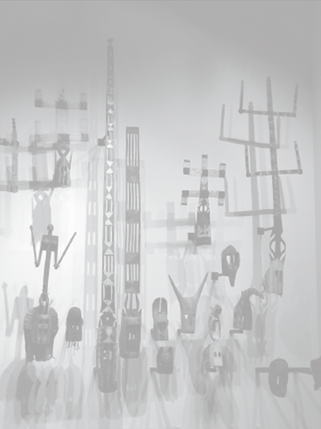
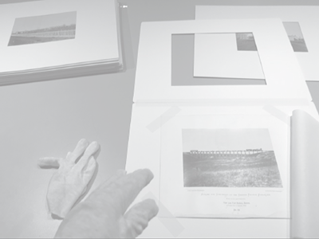
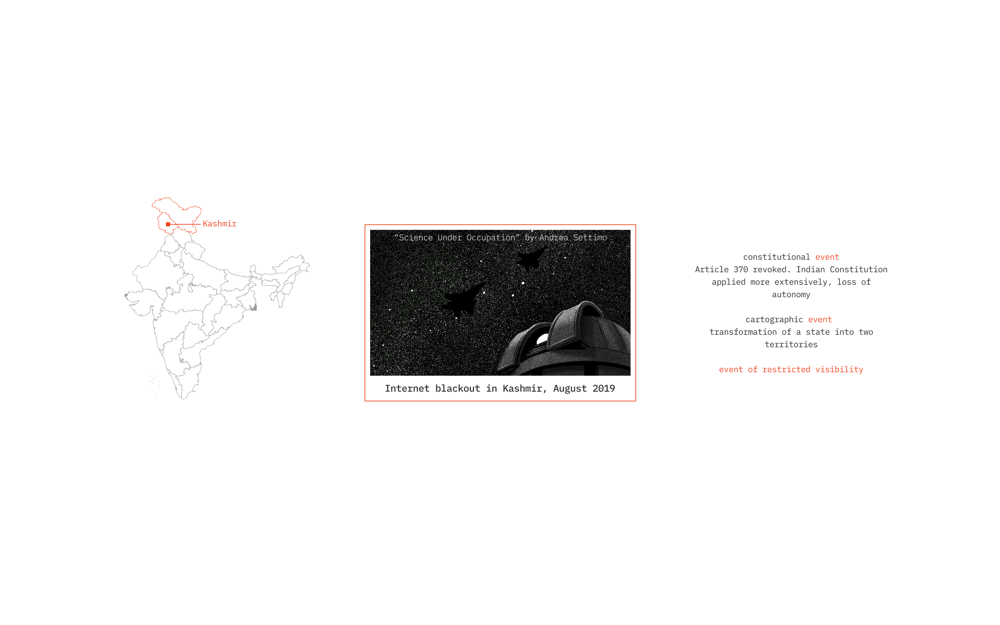

fragments become evidence
“The bomb is a composite object, its many
components arrived from dozens of factories
across Europe and the US. These products are
themselves assembled from other products drawn
from hundreds of subcontractors, and these are
supplied by providers of raw materials, which
are in turn extracted from mines spread across
the world. The bomb’s assembled structure is
coextensive with the global economy.”
(Investigative Aesthetics)



the past is not finished
fragmentation
separation
re-opening
fragments are not just found, they
exist because imperialism created them
through extraction
imperial systems detach objects from
the world they belonged to
asking us to re-open history,
re-connect earlier relationships

“Have you ever heard of the theory that
claims that every event has multiple
possible outcomes?”
(Lyd)
“I don’t know what happened to me”
(Lyd)


history opens a portal


dimensions used to describe an event also
shape how that event becomes visible


